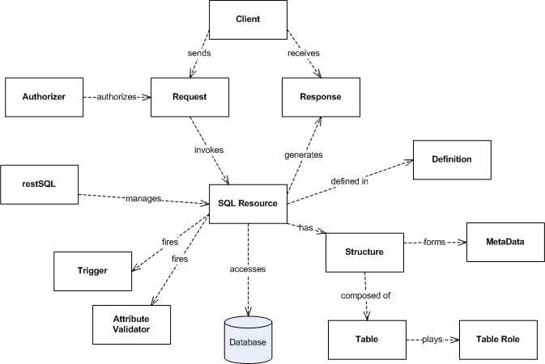
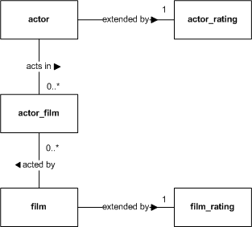

Concepts

restSQL
restSQL may be deployed in two modes: as an HTTP Service (WAR) or as a Java library (JAR). In both cases, restSQL is more of an engine than a framework, because very few extensions are required. No object hierarchy needs to be created and no persistence managers need be customized. A simple XML file defines an SQL Resource, an queryable and updatable database view that is managed by the engine. Declarative attribute validators may be employed to enforce simple data constraints (e.g. numeric ranges, string length or format), or applications may provide custom Java-based attribute validators for more enforcing more complex domain constraints. Additionally Java-based triggers may be deployed to enforce domain constraints or perform business logic.
restSQL was designed from the ground up for its implementation to be customized. The API interfaces are distinct from the implementation. Applications access implementations of various constructs using Factories. Applications may provide their own implementations by registering their factories which create the custom implementations. This may be useful for users needing application-specific extensions or support for new databases.
SQL Resource
SQL Resources are accessed by name, using URIs in the pattern /restsql/res/{resName} with HTTP methods POST, GET, PUT and DELETE and often request bodies in XML and URL Encoded Form Parameters. The HTTP API offers flexibility in request forms; there are often multiple ways of submitting the same request. Path and query parameters qualify the rows for the operation. URL Encoded requests specify Insert or Update parameters. Or XML bodies specify write operation parameters, possibly for multiple rows.
SQL Resources are defined in XML files. The definition contains the core SELECT query to generate SQL. The framework builds an internal metadata construct by examining the query and interrogating the database. It appends WHERE clauses to the definition query for for read (SELECT) operations. It generates SQL for write (INSERT, UPDATE, DELETE) operations.
Group By queries are not supported (yet).
SQL Resource Structure
SQL Resources may be flat or hierarchical. A flat SQL Resource returns read responses with each row in a single element/object. A hierarchical SQL Resource returns read responses in a single-level nested element/object set. Only one level parent-child, not arbitrary depth hiearchies is supported. The definition indicates the parent, child and extension tables such that the engine can differentiate the data. Hierarchical SQL Resources may be one-to-many or many-to-many. For example, employees typically report to one department so department-employee is a one-to-many relationship. Multiple departments collaborate on multiple projects, so department-project is a many-to-many relationship. In a one-to-many hierarchical SQL Resource, children are fully managable. Conversely, in a many-to-many hierarchical SQL Resource, the child rows may not be created or deleted; rather they are associated and disassociated with the parent. A separate SQL Resource for the the child may be used to create and delete them. Updates to the children are not supported in a many-to-many SQL Resource.
See SQL Resource Rules for an elaboration on constraints.
Table Role
A many-to-many hierarchical SQL Resource called ActorFilm is used to elaborate the concept. The following diagram depicts the physical data model for its tables:

The roles are defined in the following table with examples from ActorFilm:
| Role | Meaning | Applies To | ActorFilm Example |
|---|---|---|---|
| Parent | Driving table. XML/JSON objects will be named using this table for all flat rows and hierarchical parent rows. | Flat, Hierarchical | actor |
| Parent Extension | Joined table to the parent that adds more columns. Appears to the client as if parent and extensions are one row/object. | Flat, Hierarchical | actor_rating |
| Child | Defines row/objects that are contained by the parent and will be nested in an XML/JSON representation. The child in a master-detail form/view. | Hierarchical | film |
| Child Extension | Joined table to the child that adds more columns. Appears to the client as if child and extensions are one row/object. | Hierarchical | film_rating |
| Join | The join table in a many-to-many relationship. | Hierarchical Many-to-Many | film_actor |
For a flat SQL Resource, a Parent table must be declared. For a one-to-many hierarchical SQL Resource, a Parent and a Child table must be declared. For a many-to-many hierarchical, a Parent, a Join and a Child table must be declared. Only one Parent, Child and Join table may be defined, but an unlimited number of ParentExtensions and ChildExtensions are possible. ParentExtensions and ChildExtensions are optional.
If tables are unqualified, restSQL uses the default database. If they are qualified in the query (e.g. sakila.actor), then they must be qualified in the role definitions.
See SQL Resource Rules for an elaboration on constraints.
SQL Resource Definition
sqlresources.dir restsql.properties property. Here is an example of a flat resource called FilmRating in a file named FilmRating.xml:
<?xml version="1.0" encoding="UTF-8"?>
<rs:sqlResource xmlns:rs="http://restsql.org/schema"
xmlns:xsi="http://www.w3.org/2001/XMLSchema-instance"
xsi:schemaLocation="http://restsql.org/schema SqlResource.xsd ">
<query>
select film.film_id, title, release_year,language_id,
rental_duration,rental_rate,replacement_cost, film_rating_id, stars
from film, film_rating
where film.film_id = film_rating.film_id
</query>
<metadata>
<database default="sakila" />
<table name="film" role="Parent" />
<table name="film_rating" role="ParentExtension" />
</metadata>
</rs:sqlResource>
<?xml version="1.0" encoding="UTF-8"?>
<rs:sqlResource xmlns:rs="http://restsql.org/schema"
xmlns:xsi="http://www.w3.org/2001/XMLSchema-instance"
xsi:schemaLocation="http://restsql.org/schema SqlResource.xsd ">
<query>
select language.language_id, language.name, film_id, title, release_year
from language
left outer join film on film.language_id = language.language_id
</query>
<metadata>
<database default="sakila" />
<table name="language" role="Parent" />
<table name="film" role="Child" />
</metadata>
</rs:sqlResource>
<?xml version="1.0" encoding="UTF-8"?>
<rs:sqlResource xmlns:rs="http://restsql.org/schema"
xmlns:xsi="http://www.w3.org/2001/XMLSchema-instance"
xsi:schemaLocation="http://restsql.org/schema SqlResource.xsd ">
<query>
select actor.actor_id, first_name, last_name, actor_rating.stars,
film.film_id, title, release_year, film_rating.stars
from actor
left outer join actor_rating on actor.actor_id = actor_film.actor_id
left outer join film_actor on film_actor.actor_id = actor.actor_id
left outer join film on film_actor.film_id = film.film_id
left outer join film_rating on film.film_id = film_rating.film_id
</query>
<metadata>
<database default="sakila" />
<table name="actor" role="Parent" />
<table name="actor_rating" role="ParentExtension" />
<table name="film" role="Child" />
<table name="film_rating" role="ChildExtension" />
<table name="film_actor" role="Join" />
</metadata>
</rs:sqlResource>
SQL Resource Names
sqlresources.dir). SQL resource namespaces may be organized into arbitrary-depth directories. The directory path is converted into dotted notation, following the Java package concept. For example, if ActorFilm.xml is placed in the subdirectory actor/ext, as in {sqlresources.dir}/actor/ext/ActorFilm.xml, then its name is actor.ext.ActorFilm. In the HTTP requests, it would be available at the URI /restsql/res/actor.ext.ActorFilm. If ActorFilm.xml is placed in the resources root, it would be available at the URI /restsql/res/ActorFilm.Column and Table Aliases
Warning: Aliasing primary keys in hierarchical resources is currently not supported.
The parent and child tables may also be aliased in the metadata, but not in the SQL query. These names will appear in the elements of the request or response XML/JSON. You must not alias tables in the SQL query. Columns must be disambiguated using the full table name. restSQL table aliasing is for request/response element naming only.
The LanguageFilm example below uses table aliases:
<?xml version="1.0" encoding="UTF-8"?>
<rs:sqlResource xmlns:rs="http://restsql.org/schema"
xmlns:xsi="http://www.w3.org/2001/XMLSchema-instance"
xsi:schemaLocation="http://restsql.org/schema SqlResource.xsd ">
<query>
select language.language_id, language.name, film_id, title, release_year "year"
from language
left outer join film on film.language_id = language.language_id
</query>
<metadata>
<database default="sakila" />
<table name="language" rowAlias="lang" role="Parent" />
<table name="film" rowAlias="movie" role="Child" />
</metadata>
</rs:sqlResource>
Instead of using element names language and film, the names lang and movie are used, as in:
<readResponse>
<lang language_id="100" langName="New Esperanto">
<movie year="2011" title="ESCAPE FROM TOMORROW" film_id="5000" />
<movie year="2012" title="BLOOD PURPLE" film_id="5001" />
</lang>
<lang language_id="101" langName="New Greek">
<movie year="2012" title="THE DARKENING" film_id="5002" />
<movie year="2012" title="THE LIGHTENING" film_id="5003" />
</lang>
</readResponse>
and the JSON version:
{ "langs": [
{ "langId": 100, "langName": "New Esperanto",
"movies": [
{ "year": 2011, "title": "ESCAPE FROM TOMORROW", "film_id": 5000 },
{ "year": 2012, "title": "BLOOD PURPLE", "film_id": 5001 }
]
},
{ "langId": 101, "langName": "New Greek",
"movies": [
{ "year": 2012, "title": "THE DARKENING", "film_id": 5002 },
{ "year": 2012, "title": "THE LIGHTENING", "film_id": 5003 }
]
}
]
}
For JSON serialization, by default the rowAlias, or table name if not defined, is pluralized with an 's'. Use the rowSetAlias table attribute to override this default, as in:
<?xml version="1.0" encoding="UTF-8"?>
<rs:sqlResource xmlns:rs="http://restsql.org/schema"
xmlns:xsi="http://www.w3.org/2001/XMLSchema-instance"
xsi:schemaLocation="http://restsql.org/schema SqlResource.xsd ">
<query>
select language.language_id, language.name, film_id, title, release_year "year"
from language
left outer join film on film.language_id = language.language_id
</query>
<metadata>
<database default="sakila" />
<table name="language" rowAlias="languageSet" rowSetAlias="lang" role="Parent" />
<table name="film" role="Child" />
</metadata>
</rs:sqlResource>
Results in the parent collection name as lang, but the child is defaulted to films:
{ "languageSet": [
{ "langId": 100, "langName": "New Esperanto",
"films": [
{ "year": 2011, "title": "ESCAPE FROM TOMORROW", "film_id": 5000 },
{ "year": 2012, "title": "BLOOD PURPLE", "film_id": 5001 }
]
},
{ "langId": 101, "langName": "New Greek",
"films": [
{ "year": 2012, "title": "THE DARKENING", "film_id": 5002 },
{ "year": 2012, "title": "THE LIGHTENING", "film_id": 5003 }
]
}
]
}
See SQL Resource Rules for an elaboration on constraints.
MetaData
The metadata is available to users through both HTTP and Java APIs.
SQL Resource Documentation
Client
HTTP Request
| Operation | HTTP Method | SQL Statement |
|---|---|---|
| Create | POST | INSERT |
| Read | GET | SELECT |
| Update | PUT | UPDATE |
| Delete | DELETE | DELETE |
Read requests have no body and are filtered by path params:
GET /restsql/res/Actor/124 HTTP/1.1
GET /restsql/res/Actor?last_name=SMITH HTTP/1.1
DELETE /restsql/res/Actor/124 HTTP/1.1
DELETE /restsql/res/Actor?last_name=SMITH HTTP/1.1
PUT /restsql/res/Film?title=DARK%25 HTTP/1.1 Content-Type: application/x-www-form-urlencoded rating=R&rental_duration=2
POST /restsql/res/Actor HTTP/1.1 Content-Type: application/xml <request> <actor actor_id="123" first_name="JULIANNE" last_name="DENCH" /> <actor actor_id="124" first_name="SCARLETT" last_name="BENING" /> <actor actor_id="125" first_name="ALBERT" last_name="NOLTE" /> </request>
See the HTTP API and Java API references for more on requests. See Operators for more on SQL operator support.
HTTP Response
Following is an example of a Create request for a flat SQL Resource:
POST /restsql/res/Actor HTTP/1.1 Content-Type: application/x-www-form-urlencoded Accept: application/xml actor_id=201&first_name=JULIANNE&last_name=DENCH
and the response:
HTTP/1.1 200 OK Content-Type: application/xml <writeResponse rowsAffected="1"> <actor actor_id="201" first_name="JULIANNE" last_name="DENCH" /> <writeResponse/>
Following is a variation of the previous example without the primary key, actor_id, relying on the default value's auto-increment in MySQL or sequence in PostgreSQL:
POST /restsql/res/Actor HTTP/1.1 Content-Type: application/x-www-form-urlencoded Accept: application/xml first_name=JULIANNE&last_name=DENCH
and the response:
HTTP/1.1 200 OK Content-Type: application/xml <writeResponse rowsAffected="1"> <actor actor_id="202" first_name="JULIANNE" last_name="DENCH" /> <writeResponse/>
Following is an example of a Read request with query parameters on a many-to-many hierarchical SQL Resource:
GET /restsql/res/actor.ext.ActorFilm?last_name=SMITH HTTP/1.1 Accept: application/json
and the response:
HTTP/1.1 200 OK
Content-Type: application/json
{ "actors": [
{ "last_name": "SMITH", "first_name": "JULIANNE", "actor_id": "201",
"films": [
{ "year": "2006", "title": "ACADEMY DINOSAUR", "film_id": "1" },
{ "year": "2006", "title": "ADAPTATION HOLES", "film_id": "3" },
{ "year": "2006", "title": "ANACONDA CONFESSIONS", "film_id": "23" }
]
},
{ "last_name": "SMITH", "first_name": "PATRICK", "actor_id": "205",
"films": [
{ "year": "2006", "title": "APACHE DIVINE", "film_id": "31" },
{ "year": "2006", "title": "BABY HALL", "film_id": "47" },
{ "year": "2006", "title": "BULL SHAWSHANK", "film_id": "105" },
{ "year": "2006", "title": "CHAINSAW UPTOWN", "film_id": "132" }
]
}
}
DELETE /restsql/res/Film?blah=blah HTTP/1.1
HTTP/1.1 400 Bad Request No valid parameters found
GET /restsql/res/Actor/3 HTTP/1.1
HTTP/1.1 500 Internal Server Error You have an error in your SQL syntax; check the manual that corresponds to your MySQL server version for the right syntax to use near 'LIMIT 0,1' at line 1 :: select actor_id, first_name, last_name from LIMIT 0,1
Authorizer
security.privileges property in the restsql.properties. Following is an example:# SQL Resource Privilege definitions # [SqlResource,*].[requestType,*]=[*,role] Note: comma-separate multiple roles *.select=all,limited,readonly Film.insert,update=limited
In the restSQL WAR mode, clients use standard HTTP Basic or Digest authentication and standard JEE web app declarative security mechanisms. Credentials and role assignments are provided by a standard Realm plugin, which could be file-, RDBMS- or LDAP-based. The authentication method, realm and protected resources are declared in restSQL's Deployment Descriptor (web.xml). The Authorizer, when configured, is used by the restSQL HTTP Service. The container will send 401 responses for requests without credentials or with invalid credentials. restSQL will send 403 responses for unauthorized requests.
In the restSQL JAR mode, the app is responsible for authenticating users and associating users with roles. The app will call restSQL's Authorizer with a SecurityContext implementation prior to executing SQL Resource requests.
Trigger
Trigger interface or extend the convenience class AbstractTrigger. Triggers have methods that fire before and after each CRUD operation. Throwing an InvalidRequestException on a beforeXxx method stops the request. A properties file maps trigger classes to one or more SQL Resources.Attribute Validator (Planned Feature)
<?xml version="1.0" encoding="UTF-8"?>
<rs:sqlResource xmlns:rs="http://restsql.org/schema"
xmlns:xsi="http://www.w3.org/2001/XMLSchema-instance"
xsi:schemaLocation="http://restsql.org/schema SqlResource.xsd "
name="Actor" defaultDatabase="sakila" parent="actor">
<query>
select actor_id, first_name, last_name, class
from actor
</query>
<validatedAttribute name="first_name" type="String" minLength="1" maxLength="20" />
<validatedAttribute name="class" type="Integer" minValue="1" maxValue="5" />
</rs:sqlResource>
Custom Java-based attribute validators may be deployed to enforce more complex domain logic. The design of this feature is pending.